Ziyoratgoh
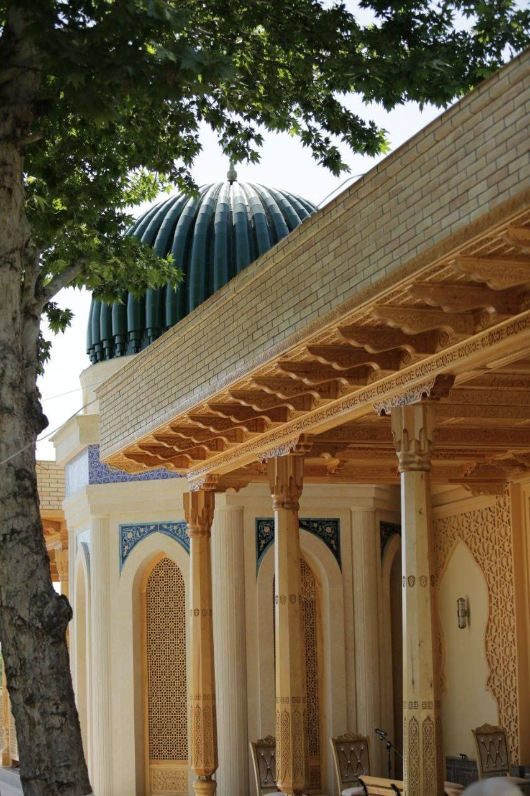
Pistamozor ziyoratgohi
Asakaning eng qadimiy va e'zozlangan ziyoratgohlaridan biri, mahalliy aholi va mehmonlar tomonidan tez-tez tashrif buyuriladigan muqaddas manzil.
Andijon vodiysining tarixi, mehmondo'stligi va zamonaviy hayoti bir joyda uyg'unlashgan tuman — sayohatingizni shu yerdan boshlang.
Asaka tumani — Andijon viloyatining sanoat va qishloq xo'jaligi rivojlangan hududlaridan biri bo'lib, shu bilan birga qadimiy ziyoratgohlari, yashil bog'lari va milliy mehmondo'stligi bilan mehmonlarni o'ziga tortadi. Tumanda tarixiy obidalar, zamonaviy mehmonxonalar, dam olish maskanlari va savdo markazlari mavjud bo'lib, ular har bir mehmon uchun qulay va unutilmas sayohat tajribasini yaratadi.
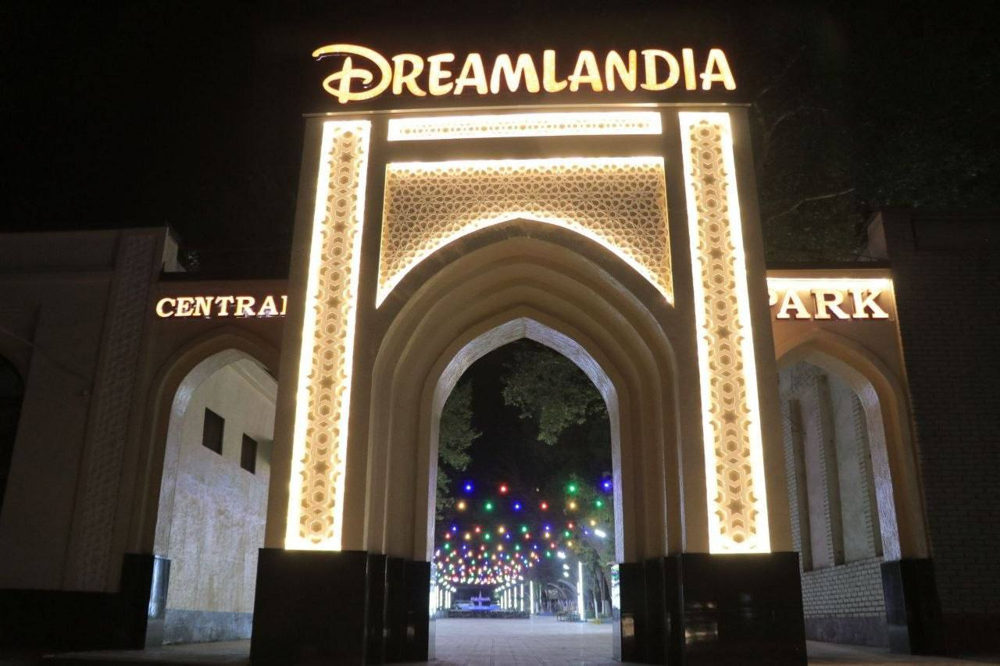
Asrlar osha saqlanib kelayotgan ziyoratgohlar va me'moriy inshootlar tuman tarixining jonli guvohlari.

Asakaning eng qadimiy va e'zozlangan ziyoratgohlaridan biri, mahalliy aholi va mehmonlar tomonidan tez-tez tashrif buyuriladigan muqaddas manzil.
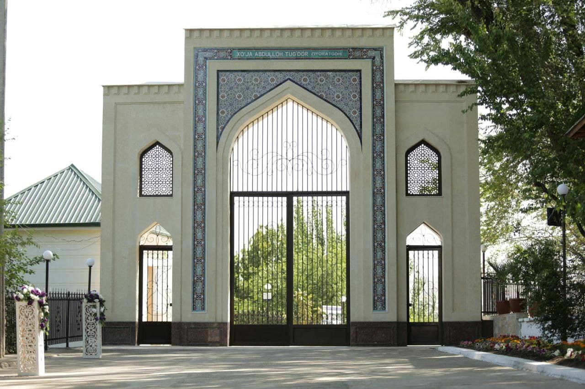
Ziyoratgoh hududi obodonlashtirilgan bo'lib, ziyoratchilar uchun tinch va osoyishta muhit yaratilgan.
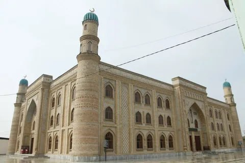
Milliy va zamonaviy me'morchilik uyg'unligida qurilgan, tuman ma'naviy hayotining markazlaridan biri.
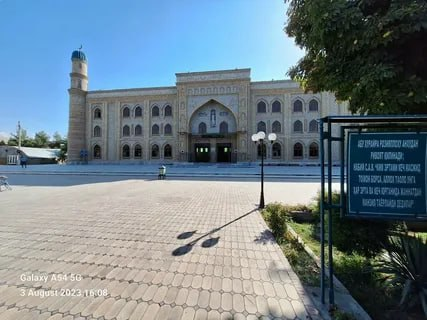
Keng va yorug' hovli, bayram va jума namozlarida yuzlab jamoat a'zolarini qabul qiladi.
Oila va do'stlar davrasida vaqt o'tkazish uchun yashil hudud va zamonaviy dam olish maskanlari.
Kechki chiroqlar va zamonaviy attraksionlar bilan bezatilgan, oilaviy dam olish uchun sevimli maskan.
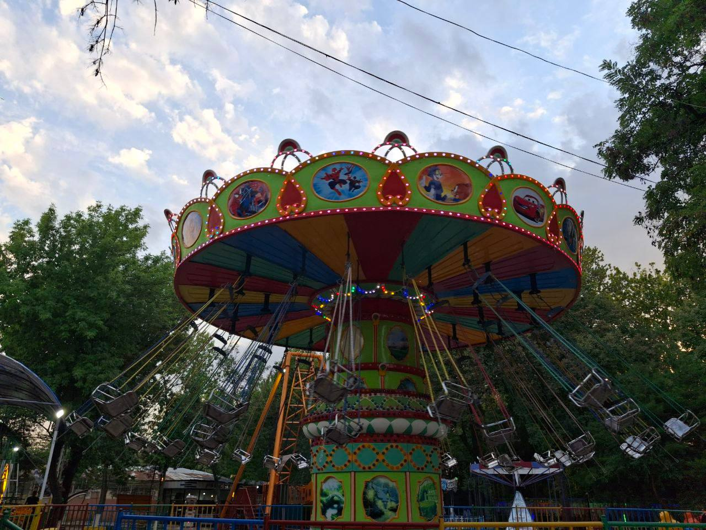
Piyodalar yo'lakchalari va dam olish zonalari bilan jihozlangan keng maydon.
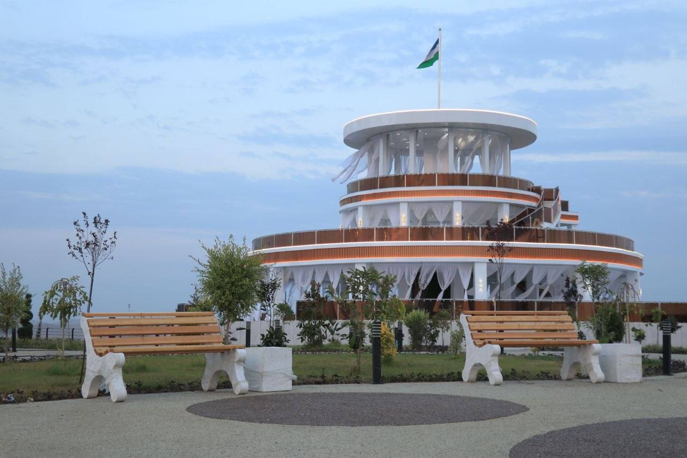
Tabiat qo'ynida joylashgan, toza havoda oromgohlarda dam olish imkoniyati.
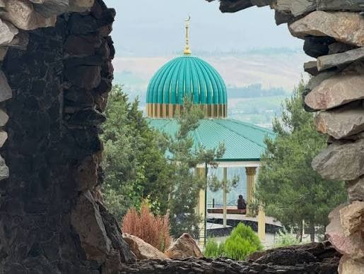
Shahar shovqinidan uzoqda, yashillik va tinchlik qo'ynida dam olish uchun qulay hudud.
Zamonaviy servis va qulay sharoitlarga ega mehmonxonalar mehmonlarni kutmoqda.
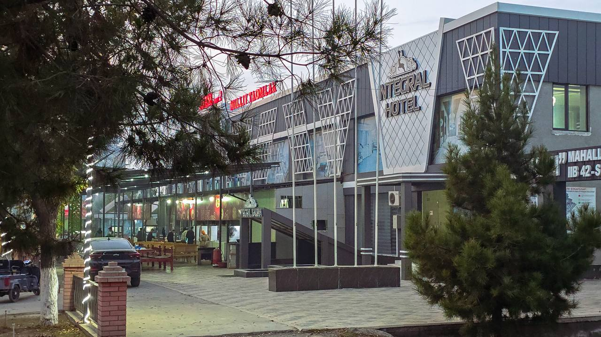
Zamonaviy me'morchilikdagi bino, biznes va oilaviy mehmonlar uchun qulay xonalar taklif etadi.
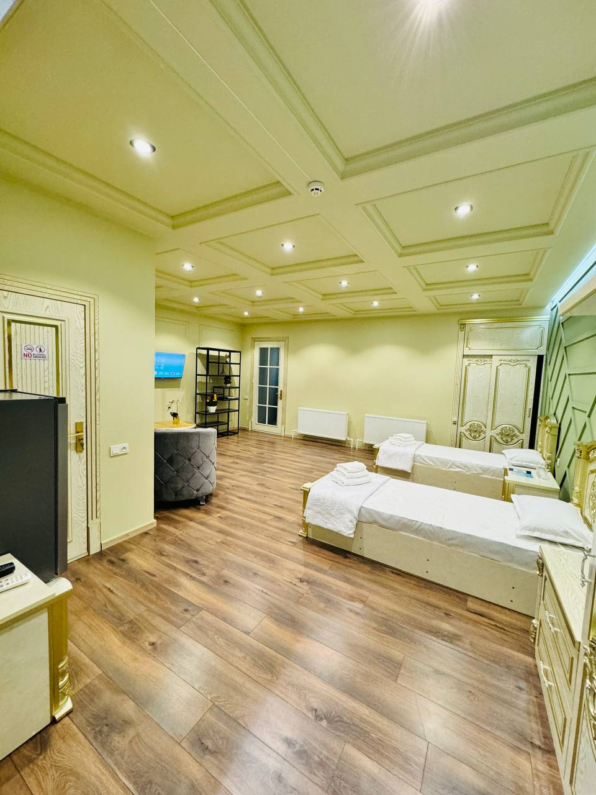
Barcha zarur qulayliklar bilan jihozlangan, tinch va toza xonalar.
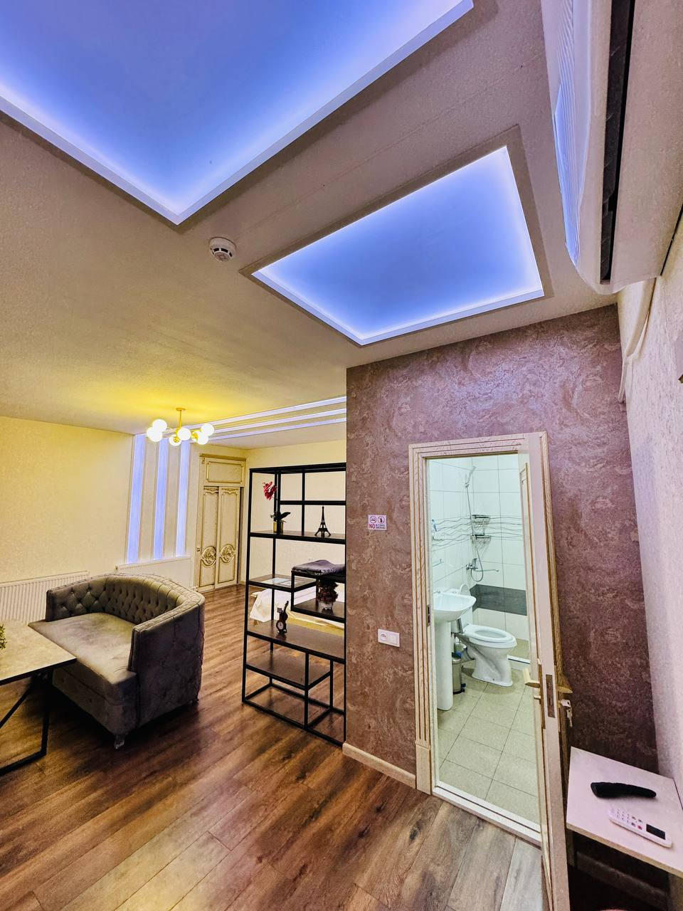
Yuqori darajadagi xizmat ko'rsatish va samimiy muomala bilan mehmonlarni kutib oladi.
Milliy taomlar va shinam kafelarda mehmondo'stlik ruhida xizmat ko'rsatiladi.
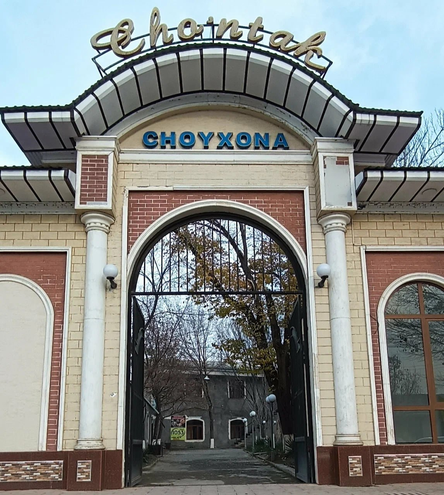
An'anaviy milliy taomlar va issiq choy bilan mehmonlarni kutadigan samimiy choyxona.
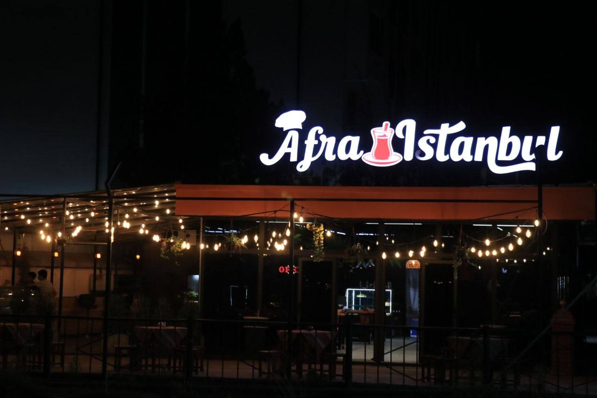
Turk va milliy taomlar uyg'unlashgan menyu bilan mehmonlarni xursand qiladigan zamonaviy kafe.
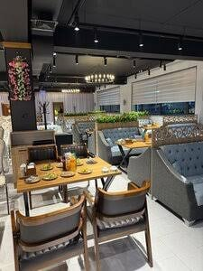
Oromli muhit va sifatli xizmat bilan oilaviy tushlik yoki uchrashuvlar uchun qulay joy.
Mahalliy ta'mga mos taomlar va samimiy xizmat ko'rsatish madaniyati bilan tanilgan.
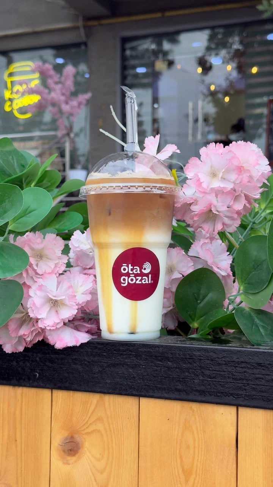
Chiroyli interyeri va shinam muhiti bilan yosh mehmonlar orasida mashhur.
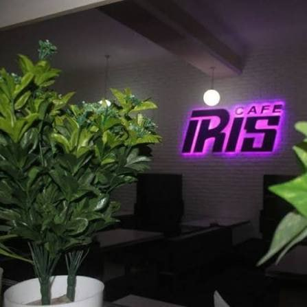
Shirinliklar va issiq ichimliklar assortimenti keng bo'lgan, oilaviy dam olish uchun qulay kafe.
Mahalliy dehqon bozori va zamonaviy savdo markazlari xaridorlar uchun keng tanlov taklif etadi.
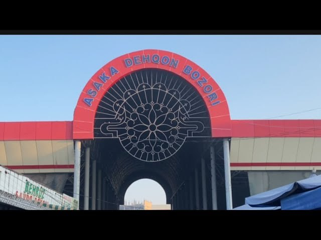
Mahalliy fermerlarning yangi va tabiiy mahsulotlarini xarid qilish mumkin bo'lgan an'anaviy bozor.
Keng assortimentli mahsulotlar va qulay xarid muhitini taqdim etuvchi zamonaviy savdo markazi.
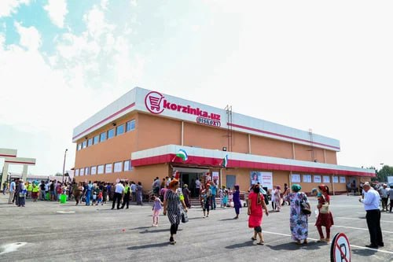
Kundalik ehtiyoj mahsulotlari uchun qulay joylashgan mashhur supermarket tarmog'i.
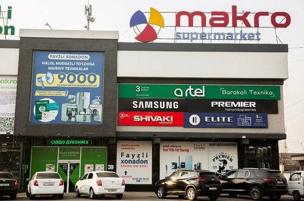
Turli xil mahsulotlar bo'yicha keng tanlov taklif qiluvchi yirik savdo maskani.
Sog'lom turmush tarzini yoqtiruvchilar uchun zamonaviy sport maydonchalari.
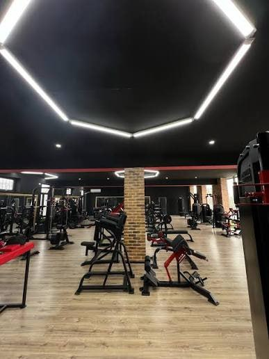
Zamonaviy jihozlar bilan ta'minlangan, yoshlar va kattalar uchun mashg'ulot maydoni.
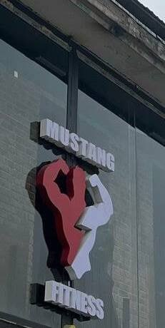
Guruh mashg'ulotlari va musobaqalar uchun qulay, ochiq va yopiq zonalarga ega.
Tuman iqtisodiyotining tayanchi bo'lgan zamonaviy ishlab chiqarish korxonalari.
Avtomobilsozlik tarmog'ida faoliyat yurituvchi, minglab ishchi o'rinlarini yaratgan yirik korxona.
Yuqori texnologik jihozlar bilan jihozlangan zamonaviy ishlab chiqarish sexlari.
Savol va takliflaringiz bo'lsa, tuman hokimligi turizm bo'limi bilan bog'lanishingiz mumkin.
Asaka tumani, Andijon viloyati, O'zbekiston
+998 (74) XXX-XX-XX
info@asaka-turizm.uz
Dushanba – Juma, 09:00 – 18:00